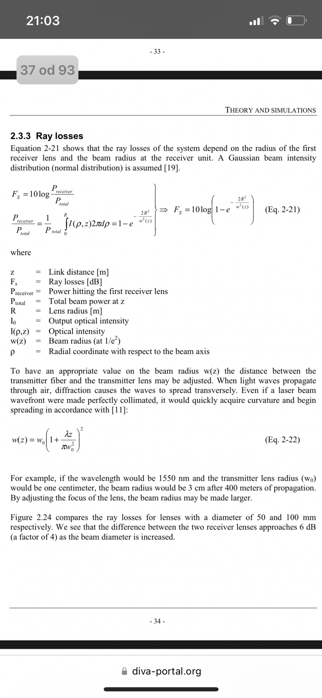
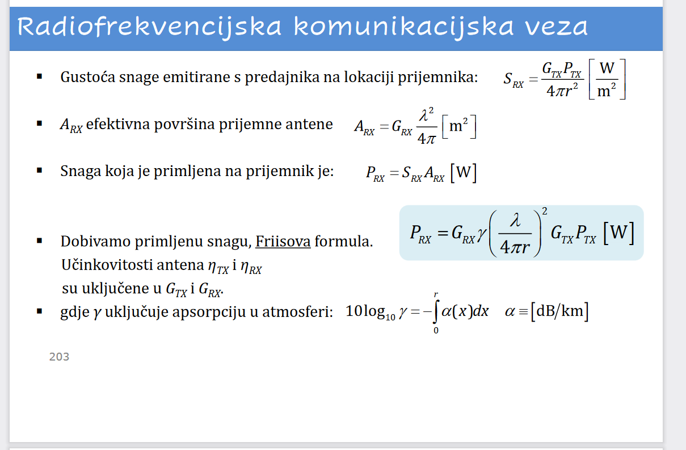
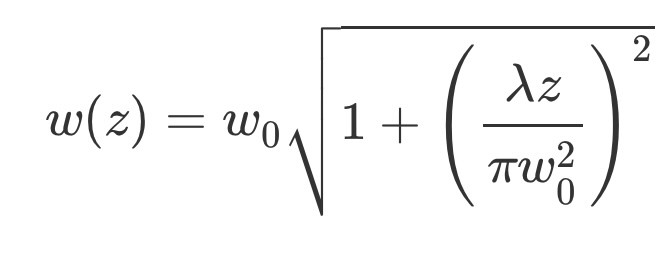

Jel ima ko 2.?
Može li netko poslati cijeli 1.zadatak?
Artemis a) c) https://fer.studosi.net/d/7354-sveteh-1-domaca-zadaca-20212022/10 d) https://fer.studosi.net/d/7354-sveteh-1-domaca-zadaca-20212022/25 e) f) g) h) https://fer.studosi.net/d/7354-sveteh-1-domaca-zadaca-20212022/61 b) nije nitko riješio (bar za sad u ovoj temi)
 Jel bi imalo smisla za 2 a uzet ovu formulu Fs, tako da w0 stavim radijus lece tj 6 cm, z kao udaljenost od mjeseca do zemlje, a R kao radijus od zrcala
steker a za b) istu formulu samo je sad izvor zrcalo a primatelj leća, pa zamjenimo R i w0. Ne znam dal ovo ista ima smisla
steker
steker jesi mozda uspjela ovo? cini mi se kao ok logika
jel netko uspio rijesit 1.b?
🤡 ne znam jesam retardirana i ne znam uvrstit brojeve pa mi ispada premal broj da mi prakticki unutar logaritma bude 0… ili jednostavno ne valja formula. uglavnom ne dobijem nis… Probaj uvrstit ak ti se da
steker cini mise da sam pod a) dobio -83dB lol
🤡 tak sam i ja na pocetku, pa sam ponovo rjesavala i sjebala samu sebe.. ugl valjda je -83
🤡
ja sam probavao kombinirat ovu Friisovu formulu : 
i pod 2.a) dobivam -86.26 dB, jedino sta me muci pod b) jel moguce da je isto kao pod a) ili na neki nacin ovisi o ovim povrsinama zrcala?
jel itko 13. uspio? dobijem premali broj
steker a pod b) -3.309? 💀
Koje je onda točno rješenje za 3?
BK- lambda = c / f = 0.0365 A = G * (lambda2 / 4pi) = 105 * (0.03652 / 4pi) = 10.65
ovako sam ja
moze netko stavit 2., pokusavam rjesavat po ovoj gore formuli i svaki put mi w(z) ispada ogroman
dontc4m4pc  Msm da je ovo ipak w(z)